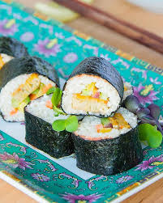
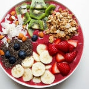

“A good meal soothes the soul as it regenerates the body. From the abundance of it flows a benign benevolence.” Frederick W. Hackwood
 An easy and simple blender recipe for healthy low-carb cauliflower sushi. It is perfect for a healthy lunch for work or school. Low-carb sushi is an amazing nutritious snack.
 The smoothie bowls of all smoothie bowls! Lots of color, texture and flavor…so delicious!.
“Food, a French man told me once, is the first wealth. Grow it right, and you feel insanely rich, no matter what you own.” Kristin Kimball (Author)
 For when you're feeling pekish
For when you're feeling pekish
 Eating raw foods with regularity, while simultaneously trying to make it varied, is HARD. However this recipe makes it all the more easier
Eating raw foods with regularity, while simultaneously trying to make it varied, is HARD. However this recipe makes it all the more easier
 Filled with sweet & spicy components & dipped in a bright sauce, these lettuce wraps are the perfect combination of simplicity & bold flavor.
Filled with sweet & spicy components & dipped in a bright sauce, these lettuce wraps are the perfect combination of simplicity & bold flavor.
 Come on, if these avocados were a summer dress, wouldn’t you want to buy three of them
Come on, if these avocados were a summer dress, wouldn’t you want to buy three of them